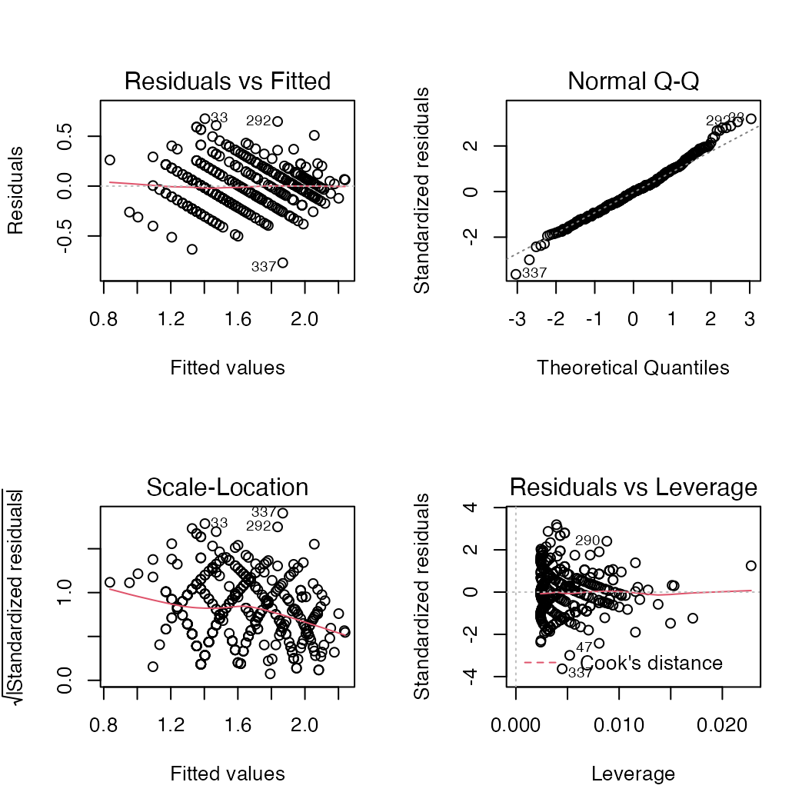

vignettes/single-species_models.Rmd
single-species_models.RmdFor a particular species of interest, data will be fit to all allometric equations. The best-fit model is selected based on the lowest bias-corrected Aikaike’s information criterion (AICc) value. Here’s an example to select the best-fit model for the species Albizia saman, using the function sp_modelselect().
data(urbantrees, package = "allometree") Alb_sam <- urbantrees[urbantrees$species == "Albizia saman", ] # subset data for one species results <- sp_modelselect(Alb_sam, response = "height", predictor = "diameter") # specify colnames of variables
The results variable is a list of 3 elements:
all_models_rank.best_model.best_model_info. More information on the output columns can be found at ?sp_modelselect.head(results$all_models_rank) #> df AICc model #> 1 3 591.9422 lin_w1 #> 2 4 593.0074 quad_w1 #> 3 5 593.4045 cub_w1 #> 4 6 594.0030 quart_w1 #> 5 3 594.0139 lin_w2 #> 6 5 595.5983 cub_w2
results$best_model #> #> Call: #> lm(formula = y ~ x) #> #> Coefficients: #> (Intercept) x #> 6.717 9.464
results$best_model_info #> modelcode a b c d e response_geom_mean correctn_factor #> 1 lin_w1 6.717431 9.464096 NA NA NA 13.56608 1 #> predictor_min predictor_max response_min response_max residual_SE mean_SE #> 1 0.3119437 1.527887 8 20 2.205 4.7889 #> adj_R2 n #> 1 0.4276 133
We can also run sp_modelselect() across multiple species in the full dataset urbantrees. For this, we use the wrapper function sp_modelselect_multi().
results_all <- sp_modelselect_multi(urbantrees, species = "species", # specify colname of species response = "height", predictor = "diameter")
The results_all variable is a list of 3 elements:
sp_models_rank.sp_models.sp_models_info.
An overview of the best-fit models across the 5 species:
results_all$sp_models_info #> species modelcode a b c d #> 1 Albizia saman lin_w1 6.717431 9.464096 NA NA #> 2 Hopea odorata quart_w4 -1.149669 149.317848 -1522.6122 7908.410 #> 3 Syzygium myrtifolium quart_w2 -4.614100 158.512849 -748.2492 1638.676 #> 4 Terminalia mantaly expo_w1 9.430067 29.320921 NA NA #> 5 Xanthostemon chrysanthus loglog_w1 14.926404 2.982932 NA NA #> e response_geom_mean correctn_factor predictor_min predictor_max #> 1 NA 13.566083 1 0.31194369 1.5278875 #> 2 -14225.442 5.390829 1 0.03183099 0.2928451 #> 3 -1321.221 7.735643 1 0.04138029 0.5665916 #> 4 NA 7.596013 1 0.03501409 0.5602254 #> 5 NA 5.067462 1 0.02864789 0.3533240 #> response_min response_max residual_SE mean_SE adj_R2 n #> 1 8 20 2.2050 4.7889 0.4276 133 #> 2 2 15 11.9430 2.6339 0.5460 483 #> 3 1 18 2.1674 2.2536 0.6662 353 #> 4 3 18 1.8938 3.5502 0.6702 197 #> 5 2 43 1.2064 1.4484 0.5551 419
Let’s say we want to check for outlier/influential data points, remove them, and re-fit the filtered dataset to the pre-selected models as defined in results_all$sp_models_info. First, lets visualise these outliers, say, for the species Xanthostemon chrysanthus.

There are numerous ways to deal with outliers. One way is to remove them based on Cook’s Distance (bottom-right plot). In general use, outliers may be defined as points with a Cook’s distance more than four times the mean Cook’s distance (red line in plot below). Note that this threshold is not fixed, and may be adjusted according to expert knowledge.
cooks_dist <- cooks.distance(results_all$sp_models$`Xanthostemon chrysanthus`) plot(cooks_dist, pch = ".", cex = 2, main = "Outliers by Cook's Distance") abline(h = 4*mean(cooks_dist, na.rm = T), col = "red") # threshold line text(x = 1:length(cooks_dist) + 1, y = cooks_dist, labels = ifelse(cooks_dist > 4 * mean(cooks_dist, na.rm=T), names(cooks_dist), ""), col = "red") # outlier labels
We can create a function uncooker() that removes outliers for each species in the dataset urbantrees, based on their respective best-fit models in results_all$sp_models:
uncooker <- function(data, modellist){ result <- data[0,] for(i in 1:length(modellist)){ # loop over all species cooks_dist <- cooks.distance(modellist[[i]]) outliers <- as.numeric(which(cooks_dist > 4*mean(cooks_dist, na.rm=T))) # row numbers subset <- data[(data$species == names(modellist[i])),][-outliers,] result <- rbind.data.frame(result, subset) } return(result) } # run the function uncooker() urbantrees_clean <- uncooker(urbantrees, results_all$sp_models) nrow(urbantrees_clean) #> [1] 1526
59 data points were removed to obtain the filtered dataset urbantrees_clean (n = 1526).
We can now fit urbantrees_clean to the best-fit equations we defined in Section 1. Here’s an example for the species Albizia saman again, using the function sp_modelfit(). This function has an additional argument modelcode. In the case of Albizia saman, it is lin_w1 (see results_all$sp_models_info). Note that you can also pick any one of the options found in eqns_info$modelcode.
We’ll overwrite our previously-defined variables, this time with the filtered dataset:
Alb_sam <- urbantrees_clean[urbantrees_clean$species == "Albizia saman", ] results <- sp_modelfit(Alb_sam, modelcode = "lin_w1", # specify modelcode response = "height", predictor = "diameter")
The new results variable is a list of 2 elements:
fitted_model.fitted_model_info.Similar to the the wrapper function sp_modelselect_multi(), we can also run sp_modelfit_multi() to fit pre-selected models across multiple species. In this function, we need to input a reference table ref_table (i.e. results_all$sp_models_info) that provides information on the species and their corresponding modelcode.
results_all <- sp_modelfit_multi(urbantrees_clean, ref_table = results_all$sp_models_info, species = "species", # colname in both data & ref_table modelcode = "modelcode", # colname in ref_table response = "height", predictor = "diameter")
The new results_all variable is a list of 2 elements:
sp_models.sp_models_info.
To make our subsequent code less verbose, let’s assign the elements sp_models and sp_models_info to variables with the same name:
sp_models <- results_all$sp_models sp_models_info <- results_all$sp_models_info
We can simulate some data for a species of interest, and use it’s model to make predictions. We’ll use the species Albizia saman again as an example. Let’s first simulate the data, based on the range of values for the predictor variable that was used to fit the model:
predict_range <- sp_models_info[,c("species","predictor_min", "predictor_max")] # range of predictors predict_range <- predict_range[predict_range$species == "Albizia saman",] # simulate 100 data points across range predict_range_full <- as.data.frame(apply(predict_range, 1, function(x) seq(x["predictor_min"], x["predictor_max"], length.out = 100))) colnames(predict_range_full) <- predict_range$species predict_range_full <- tidyr::pivot_longer(predict_range_full, cols = colnames(predict_range_full), names_to = "species", values_to = "predictor")
sp_predict() can be used to make predictions on the simulated data predict_range_full. This appends the columns fit (predicted value), as well as the lower lwr and upper upr bounds of the prediction interval (default confidence level = 0.95):
predictions <- sp_predict(predict_range_full, models = sp_models, ref_table = sp_models_info, predictor = "predictor") head(predictions) #> species predictor fit lwr upr #> 1 Albizia saman 0.3119437 9.011007 4.679395 13.34262 #> 2 Albizia saman 0.3211393 9.111607 4.783827 13.43939 #> 3 Albizia saman 0.3303349 9.212208 4.888182 13.53623 #> 4 Albizia saman 0.3395306 9.312808 4.992459 13.63316 #> 5 Albizia saman 0.3487262 9.413409 5.096658 13.73016 #> 6 Albizia saman 0.3579218 9.514010 5.200779 13.82724
Note that you can simulate data automatically using the sp_simulate() function, which is also a wrapper to sp_predict(). This can be done for one or multiple species, using the argument select_sp. The simulated data can also be extrapolated beyond the range used to fit the model, using the argument extrapolate. Here’s an example using the models that we previously derived from the filtered dataset urbantrees_clean. Let’s say we’re interested in both Albizia saman and Hopea odorata, and overwrite our previously-defined variable predictions:
predictions <- sp_simulate(ref_table = sp_models_info, models = sp_models, select_sp = c("Albizia saman", "Hopea odorata"), extrapolate = c(0,3)) # extrapolate predictor variable down to 0 and up to 3m head(predictions) #> species predictor fit lwr upr extrapolated #> 1 Albizia saman 0.3119437 9.011007 4.679395 13.34262 FALSE #> 2 Albizia saman 0.3211393 9.111607 4.783827 13.43939 FALSE #> 3 Albizia saman 0.3303349 9.212208 4.888182 13.53623 FALSE #> 4 Albizia saman 0.3395305 9.312808 4.992458 13.63316 FALSE #> 5 Albizia saman 0.3487262 9.413409 5.096658 13.73016 FALSE #> 6 Albizia saman 0.3579218 9.514009 5.200779 13.82724 FALSE
McPherson E. G., van Doorn N. S. & Peper P. J. (2016) Urban Tree Database and Allometric Equations. General Technical Report PSW-GTR-253, USDA Forest Service, 86.
Song, X. P., Lai, H. R., Wijedasa, L. S., Yee, A. T. K., Tan, P. Y., Richards, D. R., Streamlining management practices based on the size allometry of tropical street trees (in prep).